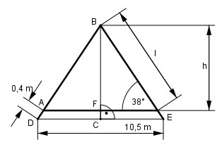

Aufgabe 128 Wie hoch ist das Dach, und wie lang sind die Sparren, wenn sie 40 cm überstehen?

Im Dreieck CEB: 10,5/2 m cos 38° = ---------- |*EB EB EB * cos 38° = 5,25 m |:cos38° 5,25 m 5,25 m EB = ---------- = -------- = 6,7 m cos 38° 0,788 l = EB - 0,4 m l = 6,7 m – 0,4 m = 6,3 m Im Dreieck AFB: h sin 38° = --- |*l l h = l * sin 38° = 6,3 m * 0,6157 = 3,9 m